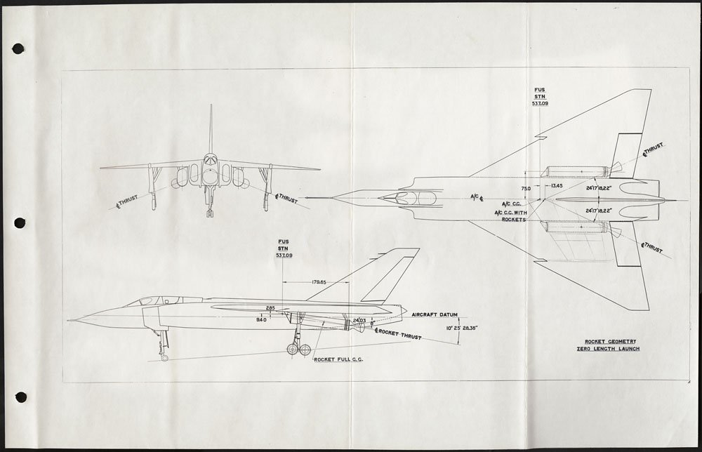

Images gallery

Images sourced from/Bibliography:
Chong, Barry. "Avro Arrow". The Canadian Encyclopedia, 10 November 2022, Historica Canada.
www.thecanadianencyclopedia.ca/en/article/avro-arrow. Accessed 11 November 2023
“Photos.” AVRO MUSEUM, Avro Museum, www.avromuseum.com/photos4.html. Accessed 10 Nov. 2023.
https://www.avromuseum.com/uploads/1/8/3/9/18390559/avro_timeline_sorted_by_section_3.pdf